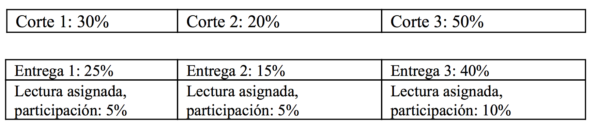

A través de un enfoque práctico, este curso le brindará la capacidad de programar software personalizado, con el fin de afrontar problemáticas relacionadas a la producción, composición, performance y/o tecnología musical. Utilizando el ambiente de programación visual Max/MSP, los contenidos del curso abordan una variedad de técnicas para el procesamiento de señal, que enfatizan en síntesis digital y manipulación de sonido grabado. Así mismo, se discutirán las posibilidades creativas y estéticas que se habilitan mediante el uso de la programación visual, con el fin de contextualizar y dar apoyo al desarrollo de un proyecto creativo de su autoría (p. ej. aplicación standalone, prototipo VST, composición/producción musical, diseño sonoro videojuego).
Cuales son las ventajas de la programación visual?
Si bien usualmente la programación se asocia a la creación y edición de líneas de texto (un método que resulta difícil y poco intuitivo para músicos y artistas sonoros), software como Max y Pure Data ofrecen un paradigma en el que las instrucciones se programan de manera gráfica, específicamente, creando e interconectando objetos en la pantalla del ordenador. Dicho paradigma ha permitido a un sin número de artistas y músicos alrededor del mundo abordar la programación de una forma más rápida e intuitiva, potencializando la creación de rutas personalizadas en la composición de música generativa, el diseño de música para videojuegos, desarrollo de plugins VST, o durante presentaciones multimediales en tiempo real. Algunos ejemplos de lo que Max posibilita se pueden encontrar en la web.
Objetivos generales:
1. Introducir, conocer y trabajar en detalle técnicas avanzadas de procesamiento de señal y música generativa.
2. Resolver problemas de procesamiento de señal y diseño de software de manera lógica, analítica y organizada.
3. Comprender la arquitectura de ambientes de programación visual, así como los conceptos fundamentales del diseño de software e interfaz de usuario.
Logros:
1. Desarrollo de plataformas de software personalizado.
2. Diseño de estrategias y trabajo creativo a través de la programación.
3. Solución de problemas relacionados a la composición, performance y/o tecnología musical, de una manera profesional y lógica.
Contenidos y cronograma:
Semana 1. Introducción a la programación visual.
Semana 2. Síntesis mediante tablas de onda.
Semana 3. Modulación.
Semana 4. Construcción de un sintetizador simple utilizando los objetos Beap.
Semana 5-6. Técnicas de música para cinta mediante tablas de onda.
Semana 7. Presentación de los proyectos individuales de los estudiantes (Entrega 1).
Semana 8. Controladores Midi. Polifonía.
Semana 9. Manejo de presets utilizando el sistema pattr. Mutación sonora.
Semana 10. Semana de receso
Semana 11-12. Protocolo OSC. TouchOSC. Miraweb.
Semana 13. Presentación de los proyectos individuales de los estudiantes (Entrega 2).
Semana 14-15. Desarrollo de proyectos individuales (12-20 min. de discusión acerca de la presentación del proyecto con cada estudiante).
Semana 16. Un poco acerca de la transformada rápida de Fourier.
Semana 17-18. Entrega final del trabajo de los estudiantes.
Metodología
Las clases presentan los contenidos de manera expositiva, en un salón adecuado con refuerzo sonoro estéreo y un proyector de video. Tras la finalización de las clases, los estudiantes llevan consigo copia de las herramientas socializadas, con el fin de continuar su desarrollo de manera individual, apoyados en los recursos de aprendizaje, disponibles a través del sistema interactivo de la Universidad (Sicua). Dichos recursos incluyen ejemplos y tutoriales acompañados de programas descargables creados en Max. En caso de que los estudiantes no hayan adquirido su propia licencia, existe la posibilidad de utilizar dichos recursos en instalaciones de la Universidad, de acuerdo a la solicitud y asignación previa de turnos de trabajo, con el equipo de Tecnologías del Departamento.
Evaluación
La evaluación se realiza acorde al dominio de conceptos y herramientas de la clase, demostrados en la realización de un proyecto individual elaborado en Max y/o Max For Live. Para el desarrollo del proyecto se realizan tres entregas con un valor de 25%, 15% y 40%, respectivamente. El 20% restante de la nota final corresponde a la discusión de la lectura asignada, así como al trabajo autónomo realizado por fuera de clase, evidenciado en la participación y discusión de los materiales complementarios (es decir, patches, tutoriales, referencias web, etc). El desglose de la evaluación a lo largo del semestre se muestra a continuación:

Entrega 1 (25%). Investigar y proponer mediante una presentación a compañeros y tutores, acompañada de una reseña de +- 600 palabras, un proyecto específico, breve y de carácter libre, concebido en Max y/o Max For Live. Este puede o no partir de las técnicas ilustradas a través de los tutoriales del curso disponibles en Sicua.
Descripción: A partir de un área de su interés, proponga un proyecto que se relacione con los temas vistos en clase: síntesis aditiva, FM, waveshaping, sampleo de sonido grabado, procesamiento modular (Beap), etc. Profundice su conocimiento acorde al area de su interés utilizando la bibliografía y página web del curso. Especifique el producto final de su proyecto (p. ej. aplicación standalone, dispositivo Max For Live, composición musical, diseño sonoro, herramienta para performance musical).
Incluya un diagrama detallado de flujo de señal del patch a realizar, junto con la información de los objetos a utilizar (puede incluir información de nombres, librerías, ejemplos, así como enlaces web).
Desglose de la evaluación: Reseña: 20%
Presentación: 30%
Diagrama de flujo de señal y patches: 50%.
Entrega 2 (15%). Evidenciar por medio de una presentación a compañeros y tutores el desarrollo del proyecto individual acorde a la propuesta entregada inicialmente. El proyecto puede desviarse de la propuesta original siempre y cuando dichos cambios sean discutidos con el tutor del curso.
Entrega 3 (40%). La tercera y última entrega comprende la presentación de:
1. Un archivo comprimido (zip o rar) que incluya la totalidad de los patches que materializan el proyecto. Estos deben ser presentados de manera organizada mediante el uso de carpetas y etiquetas. Cualquier tipo de sub-patch u objetos externos en la aplicación deben ser incluídos en la entrega.
2. La socialización en clase del proyecto ante compañeros y tutores. Debe demostrarse la funcionalidad de los patches.
Desglose de la evaluación: Realización técnica (patch): 60%
Investigación: 20%
Presentación: 20%.
Requisitos: compresión avanzada de lectura en inglés. Aunque no es necesario tener experiencia previa en programación, los estudiantes deben estar interesados en entender a profundidad los procesos subyacentes al empleo de la tecnología musical en general.
Licencia: Max puede descargarse a tavés de la página web https://cycling74.com/downloads/. Este funcionará en modo "demo" (una versión completa del software sin restricciones) durante los primeros treinta días de uso; posterior a esto debe adquirirse una licencia. Cycling74 ofrece descuentos educativos y subscripción mensual; a la fecha de publicación existen las siguientes opciones:
1. Subscripción mensual por US $9.99.
2. Subscripción anual por US $59 (precio para estudiantes y profesores).
3. Licencia permanente por US $250 (precio para estudiantes y profesores).
4. Descuentos educativos en: https://cycling74.com/shop/#.WHa7xyMrL-l
Consulte la Bibliografía de este curso en Zotero aquí .